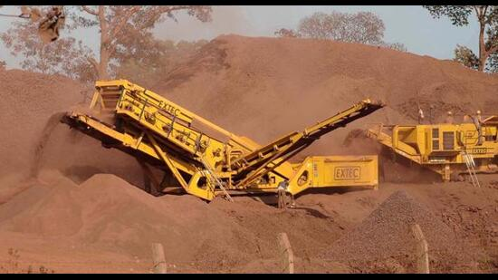

Mining is not expected to immediately resume as the tender document specifies a successful bidder will have to first obtain forest, wildlife, and environmental clearances afresh
 1 2 3 4The Goa government on Friday invited bidders to submit financial and technical bids for four iron ore blocks by November 21, beginning the process to resume mining halted in the state in September 2012.
Monte de Sirigao, Sirigao-Mayem Bicholim, and Kalay blocks will be the first to go under the hammer of the 90-odd for which mining leases were active when the ban came into effect. Several of these leases have now been amalgamated into blocks for auction.